2024 Advanced Higher Mathematics - Paper 2 marking instructions
Source: Scottish Qualifications Authority (SQA) / Qualifications Scotland. This is a StemInteract HTML companion, not an official HTML edition. Selectable text is supplied alongside original page images. Use the images or original PDF for equations, powers, fractions, vector notation, tables and diagrams; text extraction cannot fully preserve mathematical layout.
Jump to a question
PDF page 1
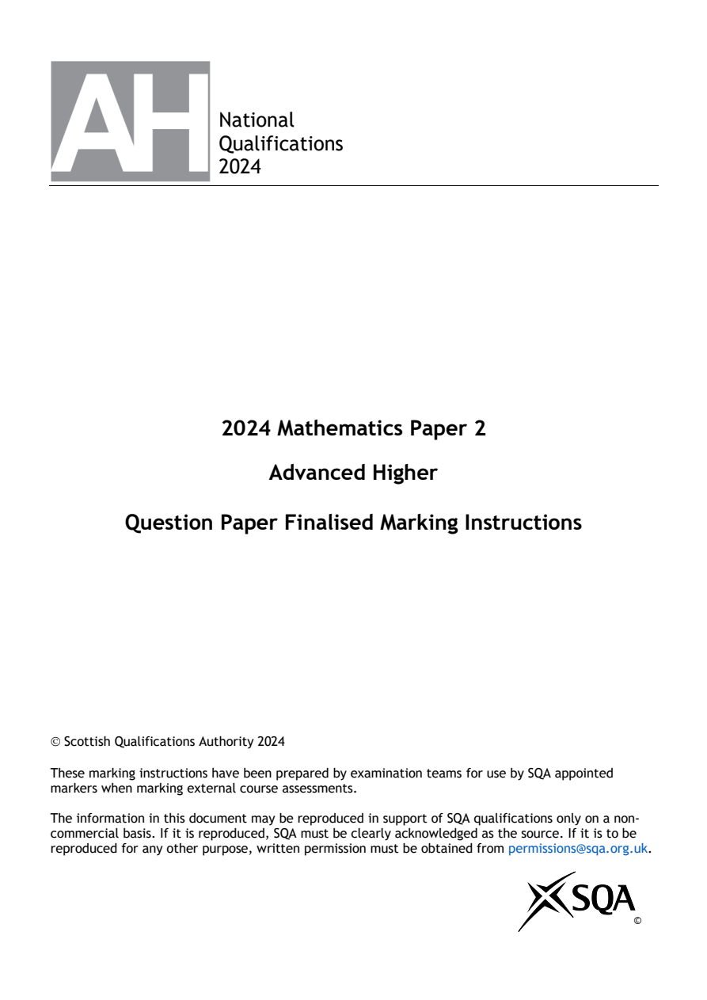
Selectable page text
National
Qualifications
2024
2024 Mathematics Paper 2
Advanced Higher
Question Paper Finalised Marking Instructions
Scottish Qualifications Authority 2024
These marking instructions have been prepared by examination teams for use by SQA appointed
markers when marking external course assessments.
The information in this document may be reproduced in support of SQA qualifications only on a non-
commercial basis. If it is reproduced, SQA must be clearly acknowledged as the source. If it is to be
reproduced for any other purpose, written permission must be obtained from permissions@sqa.org.uk.
©PDF page 2
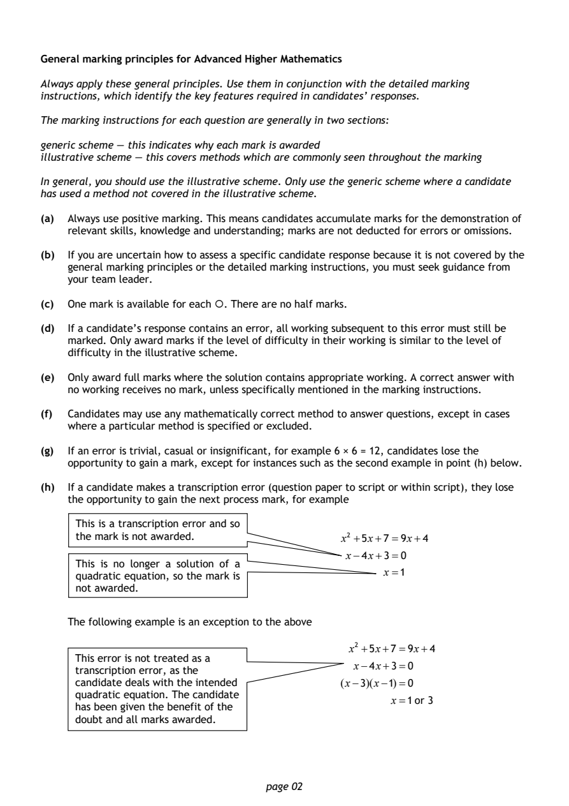
Selectable page text
General marking principles for Advanced Higher Mathematics
Always apply these general principles. Use them in conjunction with the detailed marking
instructions, which identify the key features required in candidates’ responses.
The marking instructions for each question are generally in two sections:
generic scheme — this indicates why each mark is awarded
illustrative scheme — this covers methods which are commonly seen throughout the marking
In general, you should use the illustrative scheme. Only use the generic scheme where a candidate
has used a method not covered in the illustrative scheme.
(a) Always use positive marking. This means candidates accumulate marks for the demonstration of
relevant skills, knowledge and understanding; marks are not deducted for errors or omissions.
(b) If you are uncertain how to assess a specific candidate response because it is not covered by the
general marking principles or the detailed marking instructions, you must seek guidance from
your team leader.
(c) One mark is available for each . There are no half marks.
(d) If a candidate’s response contains an error, all working subsequent to this error must still be
marked. Only award marks if the level of difficulty in their working is similar to the level of
difficulty in the illustrative scheme.
(e) Only award full marks where the solution contains appropriate working. A correct answer with
no working receives no mark, unless specifically mentioned in the marking instructions.
(f) Candidates may use any mathematically correct method to answer questions, except in cases
where a particular method is specified or excluded.
(g) If an error is trivial, casual or insignificant, for example 6 × 6 = 12, candidates lose the
opportunity to gain a mark, except for instances such as the second example in point (h) below.
(h) If a candidate makes a transcription error (question paper to script or within script), they lose
the opportunity to gain the next process mark, for example
This is a transcription error and so
the mark is not awarded. x² +5x+7 =9x+4
x−4x+3=0
This is no longer a solution of a
x=1
quadratic equation, so the mark is
not awarded.
The following example is an exception to the above
x² +5x+7 =9x+4
This error is not treated as a
x−4x+3=0
transcript ion err or, as the
candidate deals with the intended (x−3)(x−1)=0
quadratic equation. The candidate
x=1 or 3
has been given the benefit of the
doubt and all marks awarded.
page 02PDF page 3
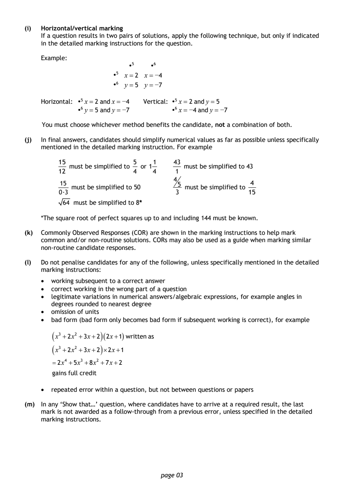
Selectable page text
(i) Horizontal/vertical marking
If a question results in two pairs of solutions, apply the following technique, but only if indicated
in the detailed marking instructions for the question.
Example:
5 6
5 x = 2 x = −4
6 y = 5 y = −7
Horizontal: 5 x = 2 and x = −4 Vertical: ⁵ x = 2 and y = 5
6 y = 5 and y = −7 6 x = −4 and y = −7
You must choose whichever method benefits the candidate, not a combination of both.
(j) In final answers, candidates should simplify numerical values as far as possible unless specifically
mentioned in the detailed marking instruction. For example
15 5 1 43
must be simplified to or 1 must be simplified to 43
12 4 4 1
4
15 5 4
must be simplified to 50 must be simplified to
0·3 3 15
64 must be simplified to 8*
*The square root of perfect squares up to and including 144 must be known.
(k) Commonly Observed Responses (COR) are shown in the marking instructions to help mark
common and/or non-routine solutions. CORs may also be used as a guide when marking similar
non-routine candidate responses.
(l) Do not penalise candidates for any of the following, unless specifically mentioned in the detailed
marking instructions:
• working subsequent to a correct answer
• correct working in the wrong part of a question
• legitimate variations in numerical answers/algebraic expressions, for example angles in
degrees rounded to nearest degree
• omission of units
• bad form (bad form only becomes bad form if subsequent working is correct), for example
( x³ +2x² +3x+2 )( 2x+1 ) written as
( )
x³ +2x² +3x+2 ×2x+1
=2x⁴ +5x³ +8x² +7x+2
gainsfull credit
• repeated error within a question, but not between questions or papers
(m) In any ‘Show that…’ question, where candidates have to arrive at a required result, the last
mark is not awarded as a follow-through from a previous error, unless specified in the detailed
marking instructions.
page 03PDF page 4
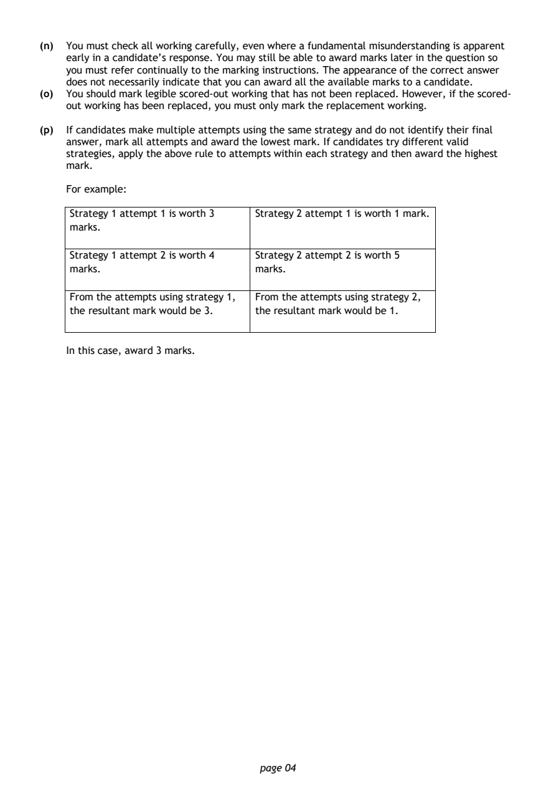
Selectable page text
(n) You must check all working carefully, even where a fundamental misunderstanding is apparent
early in a candidate’s response. You may still be able to award marks later in the question so
you must refer continually to the marking instructions. The appearance of the correct answer
does not necessarily indicate that you can award all the available marks to a candidate.
(o) You should mark legible scored-out working that has not been replaced. However, if the scored-
out working has been replaced, you must only mark the replacement working.
(p) If candidates make multiple attempts using the same strategy and do not identify their final
answer, mark all attempts and award the lowest mark. If candidates try different valid
strategies, apply the above rule to attempts within each strategy and then award the highest
mark.
For example:
Strategy 1 attempt 1 is worth 3 Strategy 2 attempt 1 is worth 1 mark.
marks.
Strategy 1 attempt 2 is worth 4 Strategy 2 attempt 2 is worth 5
marks. marks.
From the attempts using strategy 1, From the attempts using strategy 2,
the resultant mark would be 3. the resultant mark would be 1.
In this case, award 3 marks.
page 04PDF page 5
Paper 2, Question 1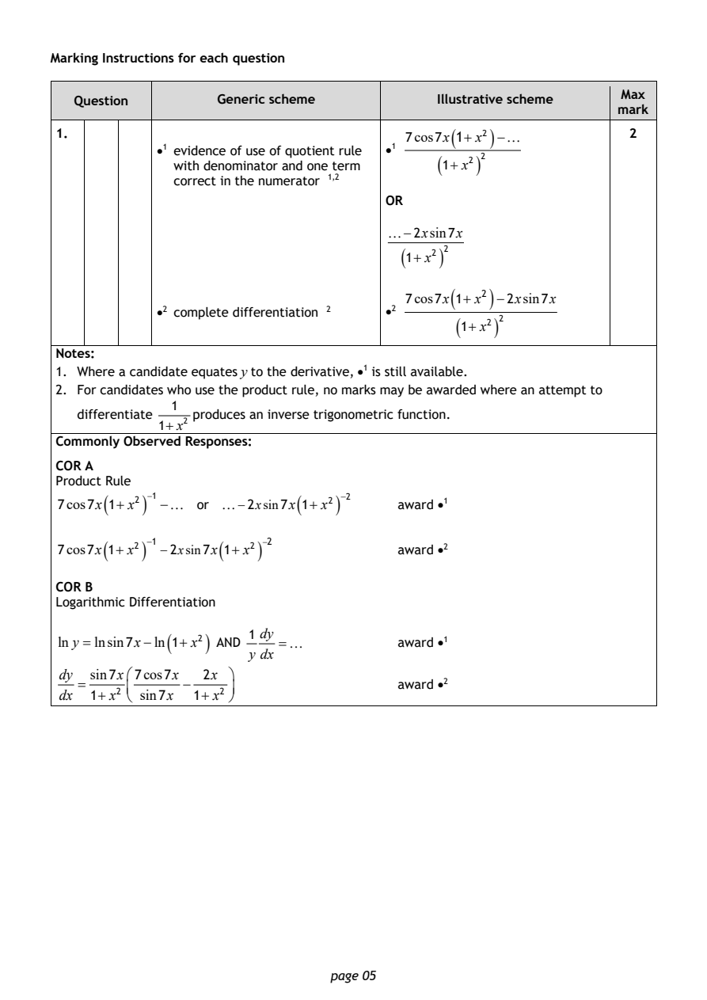
Selectable page text
Marking Instructions for each question
Max
Question Generic scheme Illustrative scheme
mark
1. 7cos7x ( 1+ x² ) − 2
•1 evidence of use of quotient rule •1
( )
with denominator and one term 1+ x² ²
correct in the numerator ¹^{,}²
OR
−2xsin7x
( )
1+ x² ²
( )
7cos7x 1+ x² −2xsin7x
•2 complete differentiation ² •2
( )
1+ x² ²
Notes:
1. Where a candidate equatesyto the derivative, •¹ is still available.
2. For candidates who use the product rule, no marks may be awarded where an attempt to
1
differentiate produces an inverse trigonometric function.
1+x²
Commonly Observed Responses:
COR A
Product Rule
( ) ( )
7cos7x 1+ x² ⁻¹ − or −2xsin7x 1+ x² ⁻² award •¹
( ) ( )
7cos7x 1+ x² ⁻¹−2xsin7x 1+ x² ⁻² award •²
COR B
Logarithmic Differentiation
( ) 1 dy
ln y =lnsin7x−ln 1+ x² AND = award •¹
y dx
dy sin7x7cos7x 2x
= − award •²
dx 1+ x² sin7x 1+ x²
page 05PDF page 6
Paper 2, Question 2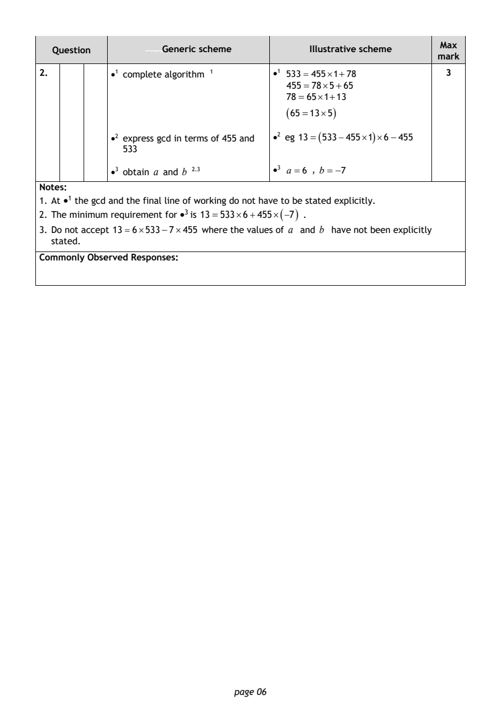
Selectable page text
Max
Question Generic scheme Illustrative scheme
mark
2. •1 complete algorithm ¹ •1 533= 455×1+78 3
455=78×5+65
78 =65×1+13
( 65=13×5 )
•2 express gcd in terms of 455 and •2 eg 13=( 533−455×1 )×6−455
533
•3 obtain a and b ²^{.}³ •3 a =6 , b = −7
Notes:
1. At •¹ the gcd and the final line of working do not have to be stated explicitly.
2. The minimum requirement for •³ is 13=533×6+455×(−7 ) .
3. Do not accept 13=6×533−7×455 where the values of a and b have not been explicitly
stated.
Commonly Observed Responses:
page 06PDF page 7
Paper 2, Question 3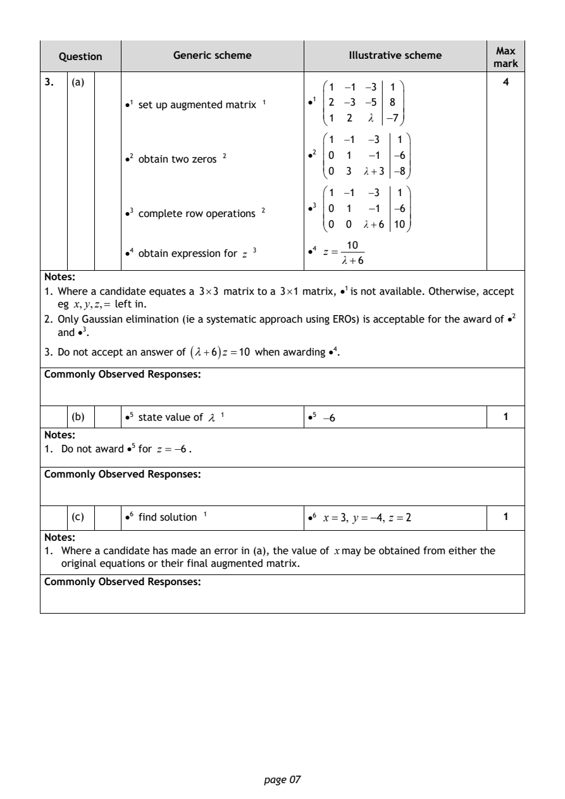
Selectable page text
Max
Question Generic scheme Illustrative scheme
mark
3. (a) 4
1 −1 −3 1
•1 set up augmented matrix ¹ •1 2 −3 −5 8
1 2 λ −7
1 −1 −3 1
•2 obtain two zeros ² •2 0 1 −1 −6
0 3 λ+3 −8
1 −1 −3 1
•3 0 1 −1 −6
•3 complete row operations ²
0 0 λ+6 10
10
•4 obtain expression for z ³ •4 z =
λ+6
Notes:
1. Where a candidate equates a 3×3 matrix to a 3×1 matrix, •¹ is not available. Otherwise, accept
eg x,y,z,= left in.
2. Only Gaussian elimination (ie a systematic approach using EROs) is acceptable for the award of •²
and •³.
3. Do not accept an answer of (λ+6 )z =10 when awarding •⁴.
Commonly Observed Responses:
(b) •5 state value of λ ¹ •5 −6 1
Notes:
1. Do not award •⁵ for z = −6.
Commonly Observed Responses:
(c) •6 find solution ¹ •6 x =3, y = −4, z =2 1
Notes:
1. Where a candidate has made an error in (a), the value of xmay be obtained from either the
original equations or their final augmented matrix.
Commonly Observed Responses:
page 07PDF page 8
Paper 2, Question 4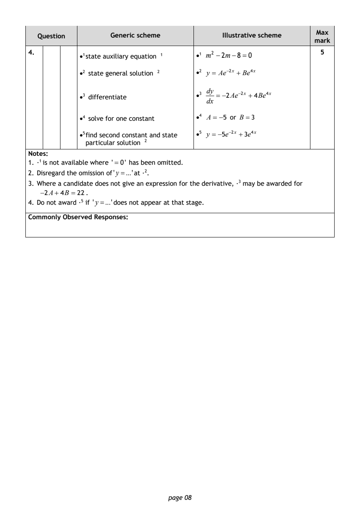
Selectable page text
Max
Question Generic scheme Illustrative scheme
mark
4. 5
•1 state auxiliary equation ¹ •1 m² −2m−8 = 0
•2 state general solution ² •2 y = Ae⁻²^{x} +Be⁴^{x}
dy
•3 differentiate •3 = −2Ae⁻²^{x} +4Be⁴^{x}
dx
•4 solve for one constant •4 A= −5 or B =3
•5 find second constant and state •5 y = −5e⁻²^{x} +3e⁴^{x}
particular solution ²
Notes:
1. ·¹ is not available where '= 0' has been omitted.
2. Disregard the omission of'y =...'at ·².
3. Where a candidate does not give an expression for the derivative, ·³ may be awarded for
−2A+4B = 22.
4. Do not award ·⁵ if 'y =...'does not appear at that stage.
Commonly Observed Responses:
page 08PDF page 9
Paper 2, Question 5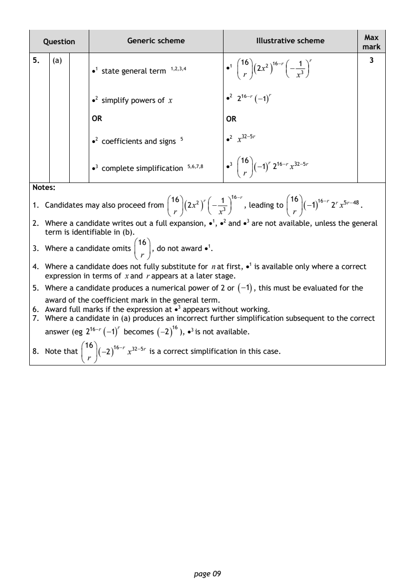
Selectable page text
Max
Question Generic scheme Illustrative scheme
mark
5. (a) •1 state general term ¹^{,}²^{,}3,4 •1 16 ( 2x² ) ¹⁶⁻ r − 1 ^{r} 3
r x³
•2 simplify powers of x •2 2¹⁶⁻^{r} (−1)^{r}
OR OR
•2 coefficients and signs ⁵ •2 x³²⁻⁵^{r}
16
•3 complete simplification ⁵^{,}⁶^{,}7,8 •3 (−1 ) ^{r} 2¹⁶⁻^{r}x³²⁻⁵^{r}
r
Notes:
1. Candidates may also proceed from 16 ( 2x² ) ^{r} − 1 ¹⁶ −r , leading to 16 (−1)¹⁶⁻^{r} 2^{r}x⁵^{r}⁻⁴⁸.
r x³ r
2. Where a candidate writes out a full expansion, •¹, •2 and •³ are not available, unless the general
term is identifiable in (b).
16
3. Where a candidate omits , do not award •¹.
r
4. Where a candidate does not fully substitute for nat first, •¹ is available only where a correct
expression in terms of xand rappears at a later stage.
5. Where a candidate produces a numerical power of 2 or
(−1 )
, this must be evaluated for the
award of the coefficient mark in the general term.
6. Award full marks if the expression at •³ appears without working.
7. Where a candidate in (a) produces an incorrect further simplification subsequent to the correct
answer (eg 2¹⁶⁻^{r} (−1 ) ^{r} becomes (−2 ) ¹⁶), •3 is not available.
16
8. Note that
(−2 )
¹⁶⁻
r
x³²⁻⁵^{r} is a correct simplification in this case.
r
page 09PDF page 10
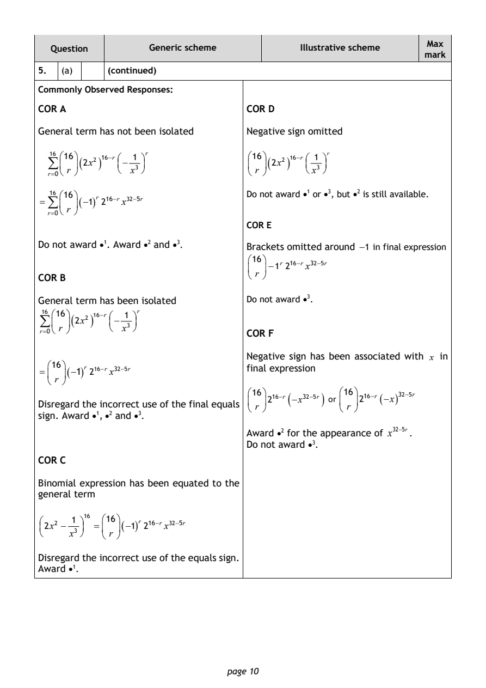
Selectable page text
Max
Question Generic scheme Illustrative scheme
mark
5. (a) (continued)
Commonly Observed Responses:
COR A COR D
General term has not been isolated Negative sign omitted
∑ 16 16 ( 2x² ) ¹⁶ −r − 1 ^{r} 16 ( 2x² ) ¹⁶⁻ r 1 ^{r}
r x³ r x³
r=0
16 16 Do not award •¹ or •³, but •² is still available.
= ∑ (−1 ) ^{r} 2¹⁶⁻^{r}x³²⁻⁵^{r}
r
r=0
COR E
Do not award •¹. Award •² and •³. Brackets omitted around −1 in final expression
16
−1^{r} 2¹⁶⁻^{r}x³²⁻⁵^{r}
r
COR B
General term has been isolated Do not award •³.
∑ 16 16 ( 2x² ) ¹⁶⁻ r − 1 ^{r}
r x³
r=0 COR F
Negative sign has been associated with x in
16
= (−1)^{r} 2¹⁶⁻^{r}x³²⁻⁵^{r} final expression
r
16
2¹⁶⁻^{r} ( −x³²⁻⁵^{r} ) or
16
2¹⁶⁻^{r} (−x ) ³²⁻⁵ r
Disregard the inc₂orrect use of the final equals
r r
sign. Award •¹, • and •³.
Award •² for the appearance of x³²⁻⁵^{r}.
Do not award •³.
COR C
Binomial expression has been equated to the
general term
1 ¹⁶ 16
2x² − = (−1 ) ^{r} 2¹⁶⁻^{r}x³²⁻⁵^{r}
x³ r
Disregard the incorrect use of the equals sign.
Award •¹.
page 10PDF page 11
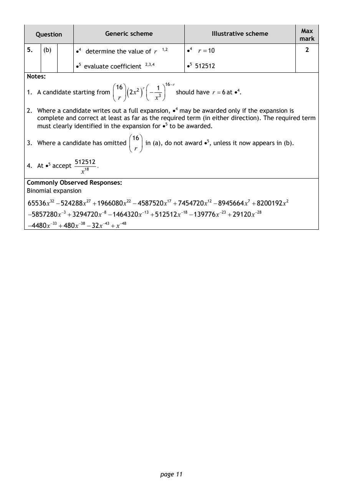
Selectable page text
Max
Question Generic scheme Illustrative scheme
mark
5. (b) •4 determine the value of r ¹^{,}² •4 r =10 2
•5 evaluate coefficient ²^{,}³^{,}4 •5 512512
Notes:
16 ( ) 1 ¹⁶
−r
1. A candidate starting from 2x² ^{r} − should have r =6at •⁴.
r x³
2. Where a candidate writes out a full expansion, •⁴ may be awarded only if the expansion is
complete and correct at least as far as the required term (in either direction). The required term
must clearly identified in the expansion for •⁵ to be awarded.
16
3. Where a candidate has omitted in (a), do not award •⁵, unless it now appears in (b).
r
512512
4. At •⁵ accept .
x¹⁸
Commonly Observed Responses:
Binomial expansion
65536x³² −524288x²⁷ +1966080x²² −4587520x¹⁷ +7454720x¹² −8945664x⁷ +8200192x²
−5857280x⁻³ +3294720x⁻⁸ −1464320x⁻¹³ +512512x⁻¹⁸ −139776x⁻²³ +29120x⁻²⁸
−4480x⁻³³ +480x⁻³⁸ −32x⁻⁴³ +x⁻⁴⁸
page 11PDF page 12
Paper 2, Question 6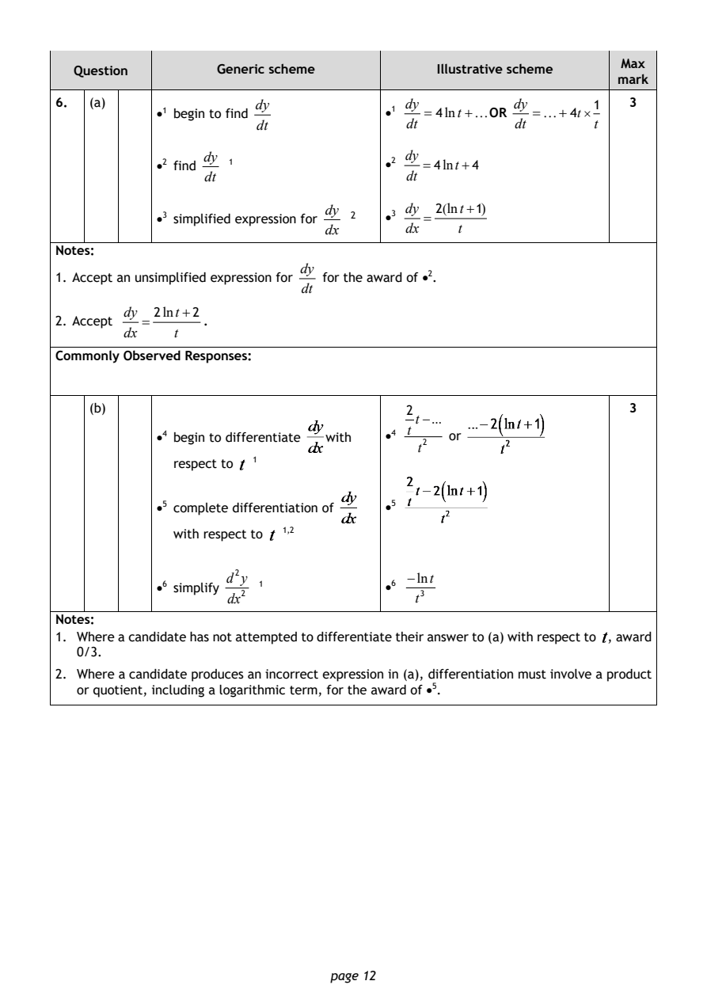
Selectable page text
Max
Question Generic scheme Illustrative scheme
mark
6. (a) dy dy dy 1 3
•1 begin to find •1 = 4lnt +OR =+4t×
dt dt dt t
dy ₁ dy
•2 find •2 =4lnt+4
dt dt
dy ₂ dy 2(lnt+1)
•3 simplified expression for •3 =
dx dx t
Notes:
dy
1. Accept an unsimplified expression for for the award of •².
dt
dy 2lnt+2
2. Accept = .
dx t
Commonly Observed Responses:
(b) 2 3
t−...
t
•4 begin to differentiate with •4 or
t²
respect to ¹
•5 complete differentiation of •5
with respect to ¹,2
d²y ₁ −lnt
•6 simplify •6
dx² t³
Notes:
1. Where a candidate has not attempted to differentiate their answer to (a) with respect to , award
0/3.
2. Where a candidate produces an incorrect expression in (a), differentiation must involve a product
or quotient, including a logarithmic term, for the award of •⁵.
page 12PDF page 13
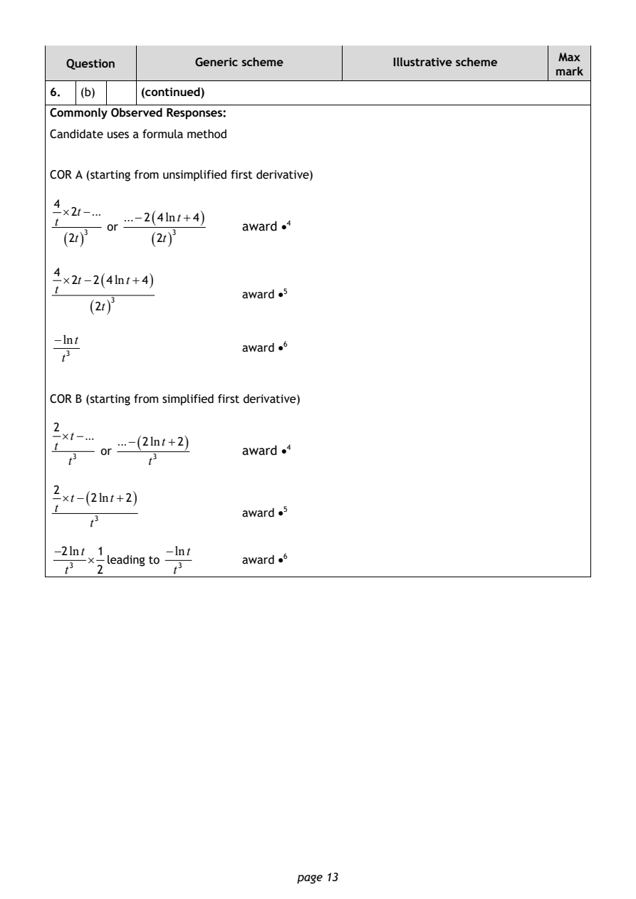
Selectable page text
Max
Question Generic scheme Illustrative scheme
mark
6. (b) (continued)
Commonly Observed Responses:
Candidate uses a formula method
COR A (starting from unsimplified first derivative)
4
×2t−...
...−2 ( 4lnt+4 )
t
or award •⁴
( ) ( )
2t ³ 2t ³
4
×2t−2 ( 4lnt+4 )
t
award •⁵
( )
2t ³
−lnt
award •⁶
t³
COR B (starting from simplified first derivative)
2
×t−...
...−( 2lnt+2 )
t
or award •⁴
t³ t³
2
×t−( 2lnt+2 )
t
award •⁵
t³
−2lnt 1 −lnt
× leading to award •⁶
t³ 2 t³
page 13PDF page 14
Paper 2, Question 7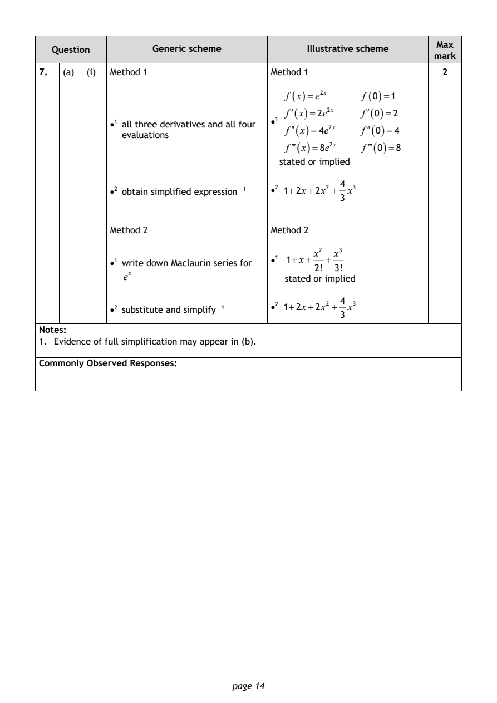
Selectable page text
Max
Question Generic scheme Illustrative scheme
mark
7. (a) (i) Method 1 Method 1 2
f
(
x
)=e²^{x}
f
(
0
)=1
f′(
x
)=2e²^{x} f′(
0
)=2
•1 all three derivatives and all four
•1
f′′(
x
)=4e²^{x} f′′(
0
)=4
evaluations
f′′′(
x
)=8e²^{x} f′′′(
0
)=8
stated or implied
4
•2 obtain simplified expression ¹ •2 1+2x+2x² + x³
3
Method 2 Method 2
x² x³
•1 write down Maclaurin series for
•1 1+x+ +
2! 3!
e^{x}
stated or implied
4
•2 substitute and simplify ¹ •2 1+2x+2x² + x³
3
Notes:
1. Evidence of full simplification may appear in (b).
Commonly Observed Responses:
page 14PDF page 15
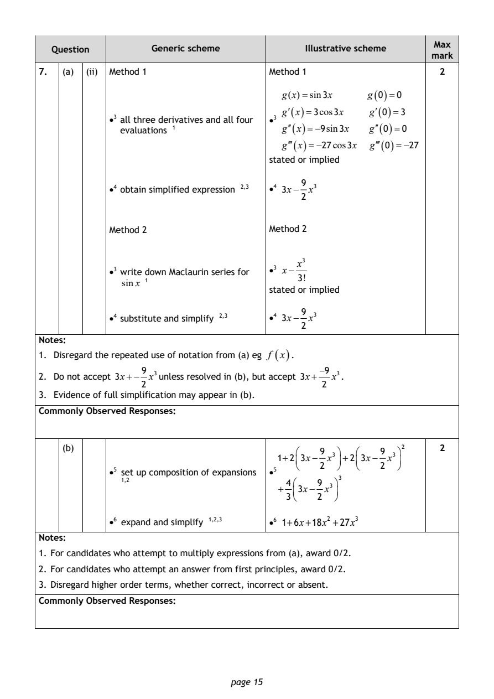
Selectable page text
Max
Question Generic scheme Illustrative scheme
mark
7. (a) (ii) Method 1 Method 1 2
g(x)=sin3x g ( 0 )=0
g′(
x
)=3cos3x g′(
0
)=3
•3 all three derivatives and all four •3
evaluations ¹
g′′(
x
)=−9sin3x g′′(
0
)=0
g′′′(
x
)=−27cos3x g′′′(
0
)=−27
stated or implied
9
•4 obtain simplified expression ²^{,}³ •4 3x− x³
2
Method 2 Method 2
x³
•3 write down Maclaurin series for •3 x−
3!
sinx ¹
stated or implied
9
•4 substitute and simplify ²^{,}³ •4 3x− x³
2
Notes:
( )
1. Disregard the repeated use of notation from (a) eg f x .
9 −9
2. Do not accept 3x+− x³unless resolved in (b), but accept 3x+ x³.
2 2
3. Evidence of full simplification may appear in (b).
Commonly Observed Responses:
(b) 2 2
9 9
1+23x− x³ +23x− x³
2 2
•5 s_{,}e₂t up composition of expansions •5
1 4 9 3
+ 3x− x³
3 2
•6 expand and simplify ¹^{,}²^{,}3 •6 1+6x+18x² +27x³
Notes:
1. For candidates who attempt to multiply expressions from (a), award 0/2.
2. For candidates who attempt an answer from first principles, award 0/2.
3. Disregard higher order terms, whether correct, incorrect or absent.
Commonly Observed Responses:
page 15PDF page 16
Paper 2, Question 8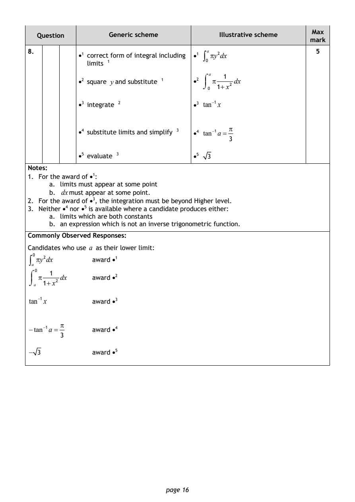
Selectable page text
Max
Question Generic scheme Illustrative scheme
mark
8. a 5
•1 correct form of integral including •1 ∫ πy²dx
limits ¹ 0
⌠ a 1
•2 square yand substitute ¹ •2 π dx
⌡ 1+x²
0
•3 integrate ² •3 tan⁻¹x
π
•4 substitute limits and simplify ³ •4 tan⁻¹a=
3
•5 evaluate ³ •5 3
Notes:
1. For the award of •¹:
a. limits must appear at some point
b. dxmust appear at some point.
2. For the award of •³, the integration must be beyond Higher level.
3. Neither •⁴ nor •⁵ is available where a candidate produces either:
a. limits which are both constants
b. an expression which is not an inverse trigonometric function.
Commonly Observed Responses:
Candidates who use a as their lower limit:
0
∫ πy²dx award •¹
a
⌠ 0 1
π dx award •²
⌡ 1+x²
a
tan⁻¹x award •³
π
−tan⁻¹a= award •⁴
3
− 3 award •⁵
page 16PDF page 17
Paper 2, Question 9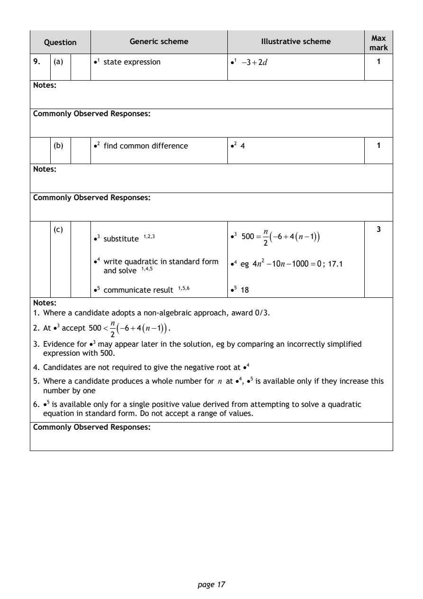
Selectable page text
Max
Question Generic scheme Illustrative scheme
mark
9. (a) •1 state expression •1 −3+2d 1
Notes:
Commonly Observed Responses:
(b) •2 find common difference •2 4 1
Notes:
Commonly Observed Responses:
(c) n 3
•3 substitute ¹^{,}²^{,}3
•3 500= ( −6+4 ( n−1 ))
2
•4 write quadra₄_{,}t₅ic in standard form •4 eg 4n² −10n−1000=0; 17.1
and solve ¹^{,}
•5 communicate result ¹^{,}⁵^{,}6 •5 18
Notes:
1. Where a candidate adopts a non-algebraic approach, award 0/3.
n
2. At •³ accept 500< ( −6+4 ( n−1 )) .
2
3. Evidence for •³ may appear later in the solution, eg by comparing an incorrectly simplified
expression with 500.
4. Candidates are not required to give the negative root at •⁴
5. Where a candidate produces a whole number for n at •⁴, •5 is available only if they increase this
number by one
6. •⁵ is available only for a single positive value derived from attempting to solve a quadratic
equation in standard form. Do not accept a range of values.
Commonly Observed Responses:
page 17PDF page 18
Paper 2, Question 10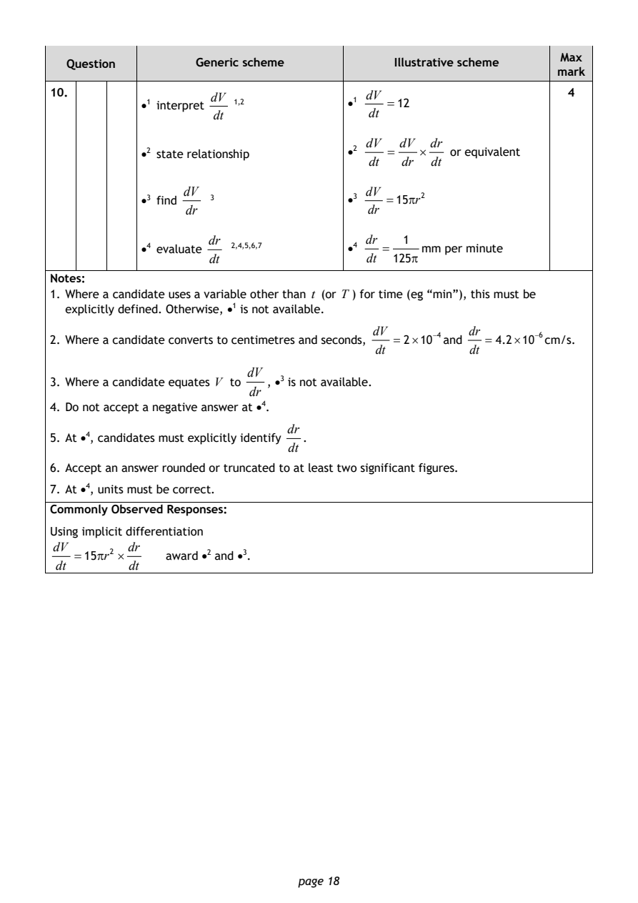
Selectable page text
Max
Question Generic scheme Illustrative scheme
mark
10. dV ₁_{,}₂ dV 4
•1 interpret •1 =12
dt dt
dV dV dr
•2 state relationship •2 = × or equivalent
dt dr dt
dV ₃ dV
•3 find •3 =15πr²
dr dr
dr ₂_{,}₄ dr 1
•4 evaluate ,5,6,7 •4 = mm per minute
dt dt 125π
Notes:
1. Where a candidate uses a variable other than t (or T ) for time (eg “min”), this must be
explicitly defined. Otherwise, •¹ is not available.
dV dr
2. Where a candidate converts to centimetres and seconds, = 2×10⁻⁴and = 4.2×10⁻⁶cm/s.
dt dt
dV ₃
3. Where a candidate equates V to , • is not available.
dr
4. Do not accept a negative answer at •⁴.
dr
5. At •⁴, candidates must explicitly identify .
dt
6. Accept an answer rounded or truncated to at least two significant figures.
7. At •⁴, units must be correct.
Commonly Observed Responses:
Using implicit differentiation
dV dr
=15πr² × award •² and •³.
dt dt
page 18PDF page 19
Paper 2, Question 11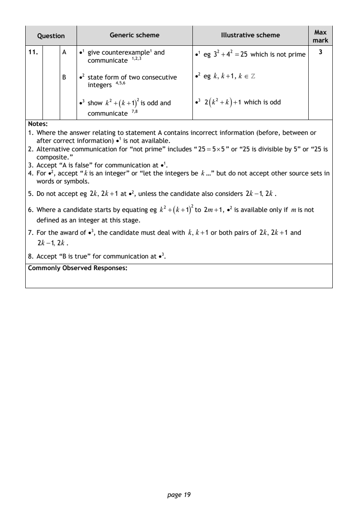
Selectable page text
Max
Question Generic scheme Illustrative scheme
mark
11. A •1 give counterexam₂_{,}₃ple¹ and •1 eg 3² +4² =25 which is not prime 3
communicate ¹^{,}
B •2 state form ₅o_{,}₆f two consecutive •2 eg k, k+1, k ∈ ℤ
integers ⁴^{,}
( )
•3 show k² +( k+1 ) ²is odd and •3 2 k² +k +1 which is odd
communicate ⁷^{,}⁸
Notes:
1. Where the answer relating to statement A contains incorrect information (before, between or
after correct information) •¹ is not available.
2. Alternative communication for “not prime” includes “25=5×5” or “25 is divisible by 5” or “25 is
composite.”
3. Accept “A is false” for communication at •¹.
4. For •², accept “kis an integer” or “let the integers be k…” but do not accept other source sets in
words or symbols.
5. Do not accept eg 2k, 2k+1 at •², unless the candidate also considers 2k−1, 2k .
6. Where a candidate starts by equating eg k² +( k+1 ) ²to 2m+1, •² is available only if mis not
defined as an integer at this stage.
7. For the award of •³, the candidate must deal with k, k+1 or both pairs of 2k, 2k+1 and
2k−1, 2k .
8. Accept “B is true” for communication at •³.
Commonly Observed Responses:
page 19PDF page 20
Paper 2, Question 12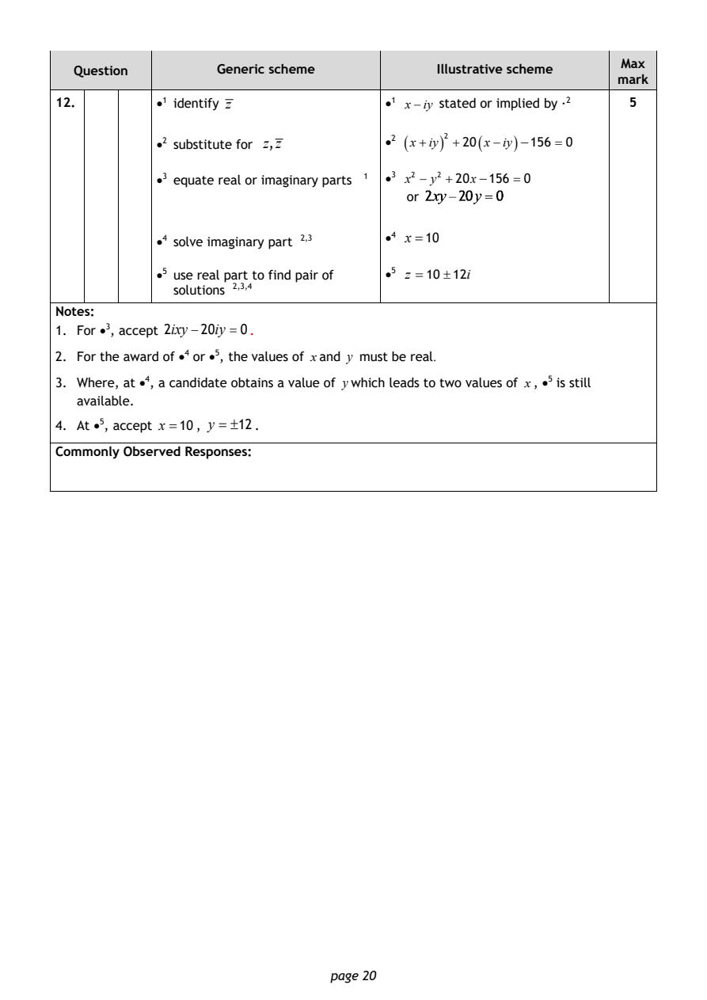
Selectable page text
Max
Question Generic scheme Illustrative scheme
mark
12. •1 identify z •1 x−iy stated or implied by ·² 5
•2 substitute for z,z •2 ( x+iy ) ² +20( x−iy )−156 = 0
•3 equate real or imaginary parts ¹ •3 x² − y² +20x−156 =0
or
•4 solve imaginary part ²^{,}³ •4 x =10
•5 use real par₃t_{,}₄ to find pair of •5 z =10±12i
solutions ²^{,}
Notes:
1. For •³, accept 2ixy−20iy = 0.
2. For the award of •⁴ or •⁵, the values of xand y must be real.
3. Where, at •⁴, a candidate obtains a value of ywhich leads to two values of x, •⁵ is still
available.
4. At •⁵, accept x =10, y = ±12.
Commonly Observed Responses:
page 20PDF page 21
Paper 2, Question 13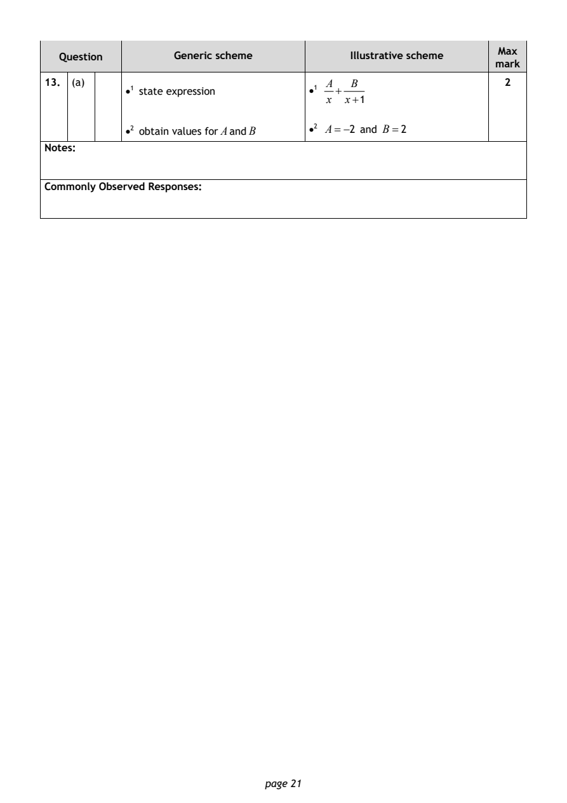
Selectable page text
Max
Question Generic scheme Illustrative scheme
mark
13. (a) A B 2
•1 state expression •1 +
x x+1
•2 obtain values forAandB •2 A=−2 and B=2
Notes:
Commonly Observed Responses:
page 21PDF page 22
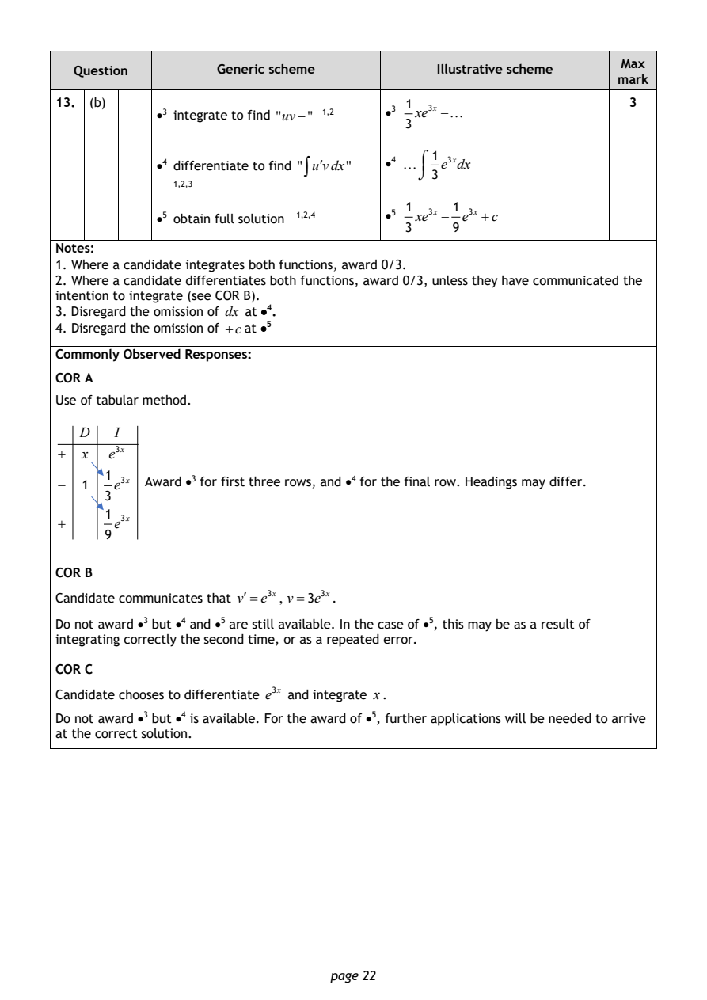
Selectable page text
Max
Question Generic scheme Illustrative scheme
mark
13. (b) 1 3
•3 integrate to find "uv−" 1,2 •3 xe³^{x} −
3
⌠ 1
•4 differentiate to find "∫u′vdx" •4 e³^{x}dx
⌡ 3
1,2,3
1 1
•5 obtain full solution ¹^{,}²,4 •5 xe³^{x} − e³^{x} +c
3 9
Notes:
1. Where a candidate integrates both functions, award 0/3.
2. Where a candidate differentiates both functions, award 0/3, unless they have communicated the
intention to integrate (see COR B).
3. Disregard the omission of dx at •⁴.
4. Disregard the omission of +cat •⁵
Commonly Observed Responses:
COR A
Use of tabular method.
D I
+ x e³^{x}
1
− 1 e³^{x} Award •³ for first three rows, and •⁴ for the final row. Headings may differ.
3
1
+ e³^{x}
9
COR B
Candidate communicates that v′=e³^{x}, v=3e³^{x}.
Do not award •³ but •⁴ and •⁵ are still available. In the case of •⁵, this may be as a result of
integrating correctly the second time, or as a repeated error.
COR C
Candidate chooses to differentiate e³^{x} and integrate x.
Do not award •³ but •⁴ is available. For the award of •⁵, further applications will be needed to arrive
at the correct solution.
page 22PDF page 23
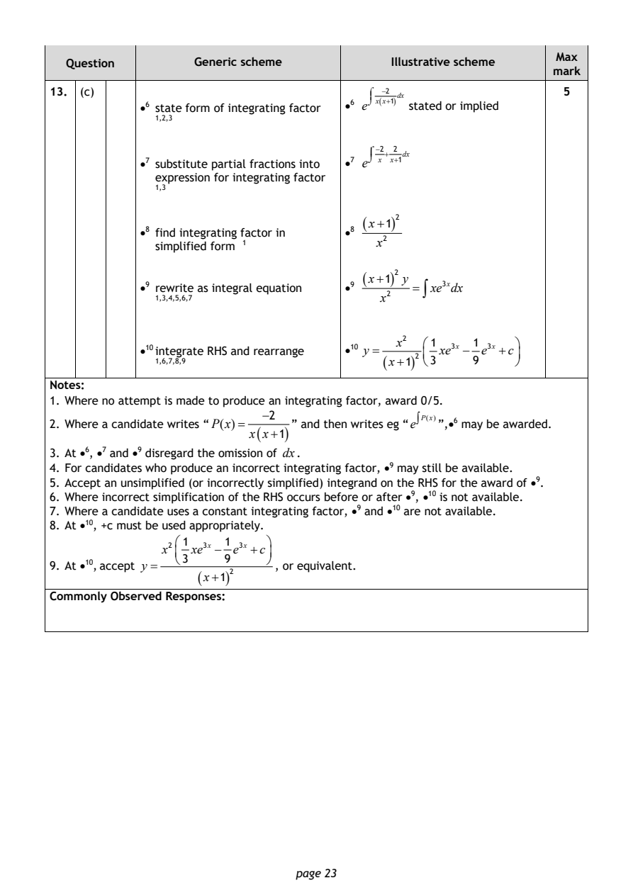
Selectable page text
Max
Question Generic scheme Illustrative scheme
mark
13. (c) ⌠ −2 5
dx
•6 s_{,}t₂a_{,}₃te form of integrating factor •6 e^{}^{⌡}^{x}⁽^{x}⁺1) stated or implied
1
− 2
dx
•7 substitute partial fractions into •7 e^{⌠}^{}^{⌡} ^{x}²⁺x+1
ex₃pression for integrating factor
1,
( x+1 ) ²
•8 find integrating factor in •8
simplified form ¹
x²
( x+1 ) ² y
•9 r_{,}e₃_{,}w₄_{,}r₅_{,}i₆t_{,}e₇ as integral equation •9 =∫xe³^{x}dx
1 x²
x² 1 1
•10 in_{,}₆t_{,}₇e_{,}₈g_{,}₉rate RHS and rearrange •10 y = xe³^{x} − e³^{x} +c
1 ( x+1 ) ² 3 9
Notes:
1. Where no attempt is made to produce an integrating factor, award 0/5.
−2
∫
2. Where a candidate writes “P(x)= ” and then writes eg “e ^{P}⁽^{x}⁾”,•6 may be awarded.
x ( x+1 )
3. At •⁶, •7 and •⁹ disregard the omission of dx.
4. For candidates who produce an incorrect integrating factor, •⁹ may still be available.
5. Accept an unsimplified (or incorrectly simplified) integrand on the RHS for the award of •⁹.
6. Where incorrect simplification of the RHS occurs before or after •⁹, •10 is not available.
7. Where a candidate uses a constant integrating factor, •⁹ and •¹⁰ are not available.
8. At •¹⁰, +c must be used appropriately.
1 1
x² xe³^{x} − e³^{x} +c
3 9
9. At •¹⁰, accept y = , or equivalent.
( x+1 ) ²
Commonly Observed Responses:
page 23PDF page 24
Paper 2, Question 14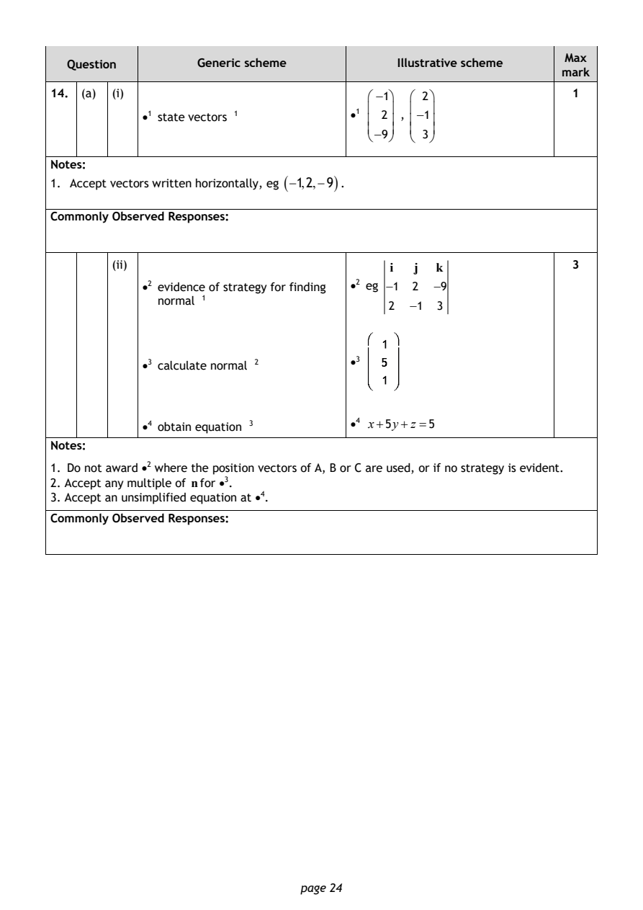
Selectable page text
Max
Question Generic scheme Illustrative scheme
mark
14. (a) (i) −1 2 1
•1 state vectors ¹ •1 2 , −1
−9 3
Notes:
1. Accept vectors written horizontally, eg
(−1,2,−9)
.
Commonly Observed Responses:
(ii) i j k 3
•2 evidence of strategy for finding •2 eg −1 2 −9
normal ¹
2 −1 3
•3 calculate normal ²
•3
•4 obtain equation ³ •4 x+5y+z =5
Notes:
1. Do not award •² where the position vectors of A, B or C are used, or if no strategy is evident.
2. Accept any multiple of nfor •³.
3. Accept an unsimplified equation at •⁴.
Commonly Observed Responses:
page 24PDF page 25
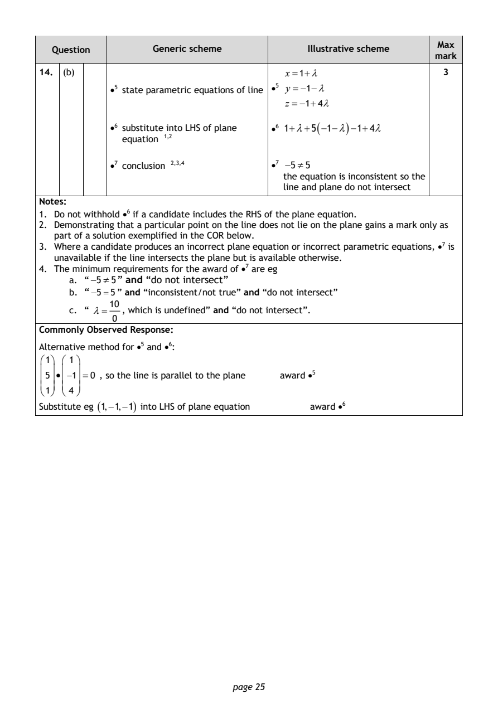
Selectable page text
Max
Question Generic scheme Illustrative scheme
mark
14. (b) x=1+λ 3
•5 state parametric equations of line •⁵ y =−1−λ
z =−1+4λ
•6 substitute in₂to LHS of plane •6 1+λ+5 (−1−λ)−1+4λ
equation ¹^{,}
•7 conclusion ²^{,}³^{,}4 •7 −5≠5
the equation is inconsistent so the
line and plane do not intersect
Notes:
1. Do not withhold •⁶ if a candidate includes the RHS of the plane equation.
2. Demonstrating that a particular point on the line does not lie on the plane gains a mark only as
part of a solution exemplified in the COR below.
3. Where a candidate produces an incorrect plane equation or incorrect parametric equations, •⁷ is
unavailable if the line intersects the plane but is available otherwise.
4. The minimum requirements for the award of •⁷ are eg
a. “−5≠5” and “do not intersect”
b. “−5=5” and “inconsistent/not true” and “do not intersect”
10
c. “ λ= , which is undefined” and “do not intersect”.
0
Commonly Observed Response:
Alternative method for •⁵ and •⁶:
1 1
5 • −1 =0 , so the line is parallel to the plane award •⁵
1 4
Substitute eg (1,−1,−1) into LHS of plane equation award •⁶
page 25PDF page 26
Paper 2, Question 15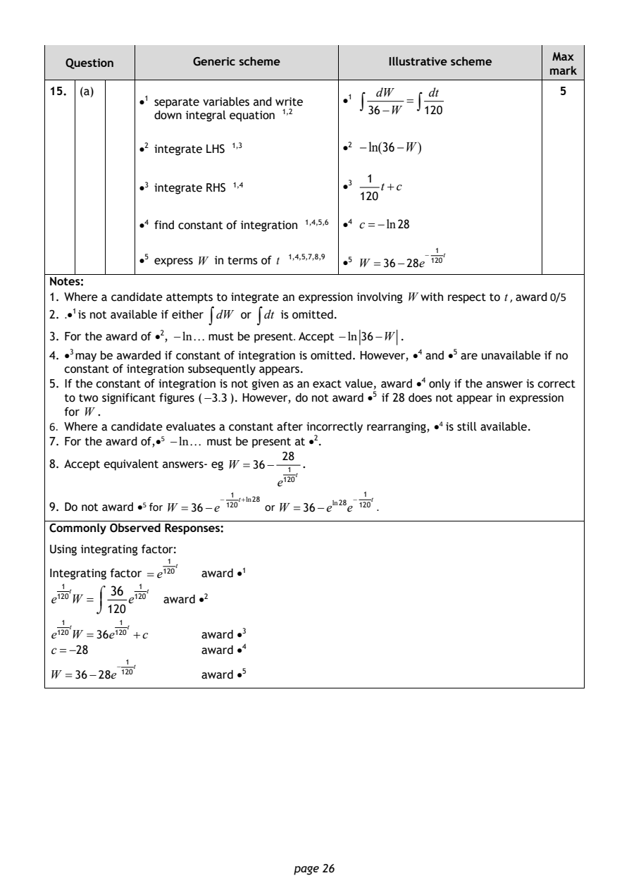
Selectable page text
Max
Question Generic scheme Illustrative scheme
mark
15. (a) dW dt 5
•1 separate variables and wri₂te •1 ∫ =∫
36−W 120
down integral equation ¹^{,}
•2 integrate LHS ¹^{,}³ •2 −ln(36−W)
1
•3 integrate RHS ¹^{,}⁴ •3 t+c
120
•4 find constant of integration ¹^{,}⁴^{,}5,6 •4 c=−ln28
•5 express W in terms of t ¹^{,}⁴^{,}5,7,8,9 •5 W =36−28e⁻¹²¹⁰^{t}
Notes:
1. Where a candidate attempts to integrate an expression involving W with respect to t, award 0/5
2. .•¹ is not available if either ∫dW or ∫dt is omitted.
3. For the award of •², −ln must be present. Accept −ln 36−W .
4. •³ may be awarded if constant of integration is omitted. However, •⁴ and •⁵ are unavailable if no
constant of integration subsequently appears.
5. If the constant of integration is not given as an exact value, award •⁴ only if the answer is correct
to two significant figures (−3.3). However, do not award •⁵ if 28 does not appear in expression
for W .
6. Where a candidate evaluates a constant after incorrectly rearranging, •⁴ is still available.
7. For the award of,•⁵ −ln must be present at •².
28
8. Accept equivalent answers- eg W =36− .
e¹²¹⁰^{t}
+ln28
9. Do not award •⁵ for W =36−e⁻¹²¹⁰^{t} or W =36−e^{l}ⁿ²⁸e⁻¹²¹⁰^{t}.
Commonly Observed Responses:
Using integrating factor:
Integrating factor =e¹²¹⁰^{t} award •¹
⌠ 36
e¹²¹⁰^{t}W = e¹²¹⁰^{t} award •²
⌡120
e¹²¹⁰^{t}W =36e¹²¹⁰^{t} +c award •³
c=−28 award •⁴
W =36−28e⁻¹²¹⁰^{t} award •⁵
page 26PDF page 27
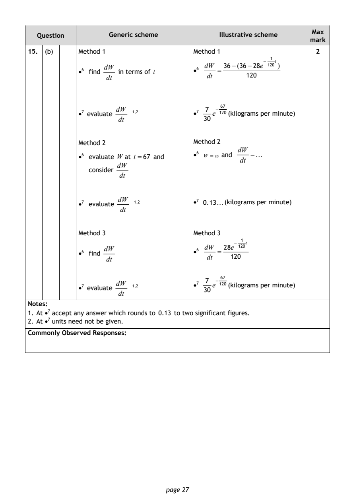
Selectable page text
Max
Question Generic scheme Illustrative scheme
mark
15. (b) Method 1 Method 1 2
t
dW dW 36−(36−28e⁻¹²¹⁰ )
•6 find in terms of t •6 =
dt dt 120
dW ₁_{,}₂ 7
•7 evaluate •7 e⁻¹⁶²⁷⁰(kilograms per minute)
dt 30
Method 2 Method 2
dW
•6 evaluate W at t =67 and •6 W =20 and =
dt
dW
consider
dt
dW ₁_{,}₂
•7 evaluate •7 0.13(kilograms per minute)
dt
Method 3 Method 3
t
•6 find dW •6
dW
=
28e⁻¹²¹⁰
dt 120
dt
7
dW ₁_{,}₂ •7 e⁻¹⁶²⁷⁰(kilograms per minute)
•7 evaluate
30
dt
Notes:
1. At •⁷ accept any answer which rounds to 0.13 to two significant figures.
2. At •⁷ units need not be given.
Commonly Observed Responses:
page 27PDF page 28
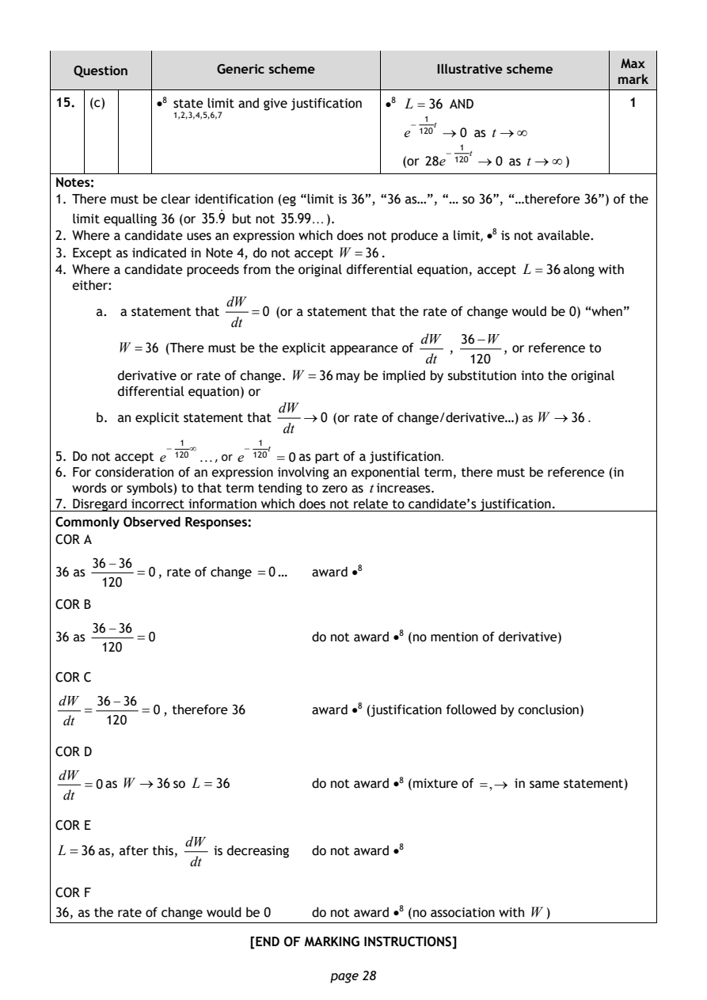
Selectable page text
Max
Question Generic scheme Illustrative scheme
mark
15. (c) •8 s_{,}t₂a_{,}₃t_{,}₄e_{,}₅ l_{,}₆im_{,}₇it and give justification •8 L = 36 AND 1
1
t
e⁻¹²¹⁰ →0 as t →∞
t
(or 28e⁻¹²¹⁰ →0 as t →∞)
Notes:
1. There must be clear identification (eg “limit is 36”, “36 as…”, “… so 36”, “…therefore 36”) of the
limit equalling 36 (or 35.9 but not 35.99).
2. Where a candidate uses an expression which does not produce a limit, •⁸ is not available.
3. Except as indicated in Note 4, do not accept W =36.
4. Where a candidate proceeds from the original differential equation, accept L =36along with
either:
dW
a. a statement that =0 (or a statement that the rate of change would be 0) “when”
dt
dW 36−W
W =36 (There must be the explicit appearance of , , or reference to
dt 120
derivative or rate of change. W =36may be implied by substitution into the original
differential equation) or
dW
b. an explicit statement that →0 (or rate of change/derivative…) as W →36.
dt
∞ t
5. Do not accept e⁻¹²¹⁰ , or e⁻¹²¹⁰ = 0as part of a justification.
6. For consideration of an expression involving an exponential term, there must be reference (in
words or symbols) to that term tending to zero as tincreases.
7. Disregard incorrect information which does not relate to candidate’s justification.
Commonly Observed Responses:
COR A
36−36
36 as =0, rate of change =0… award •⁸
120
COR B
36−36
36 as =0 do not award •⁸ (no mention of derivative)
120
COR C
dW 36−36
= =0, therefore 36 award •⁸ (justification followed by conclusion)
dt 120
COR D
dW
= 0as W →36so L =36 do not award •⁸ (mixture of =,→ in same statement)
dt
COR E
dW
L=36as, after this, is decreasing do not award •⁸
dt
COR F
36, as the rate of change would be 0 do not award •⁸ (no association with W )
[END OF MARKING INSTRUCTIONS]
page 28